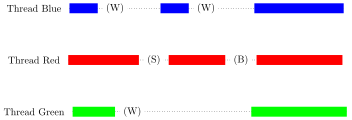
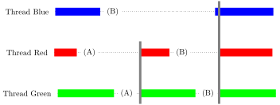

Добрый день, группа 312!
Вторая задача
Параллельное программирование с общей памятью
Библиотека pthreads
Средства синхронизации библиотеки pthreads
Вторая задача
Вторая задача — параллельная реализация алгоритма решения линейной системы (решения матрицы) с использованием библиотеки pthreads. Нужно реализовать параллельную версию вашего метода из первой задачи. При этом программа должна принимать в качестве одного из агрументов количество потоков.
При увеличении потоков на достаточно больших матрицах (2000x2000, 4000x4000) программа должна ускоряться, на 2 потоках — хотя бы в 1.6 раза, на 4 потоках — в 2.5 раза. На одном потоке программа не должна быть существенно медленнее, чем однопоточная реализация
Литература
- К.Ю. Богачёв. Основы параллельного программирования.
- Мобильное программирование приложений реального времени, Лекции 1,2
Небольшие примеры, введения, презентации:
Программы исполняются последовательно
Программы на языке C транслируются в машинный код — последовательность простых команд для процессора:
Процессор затем исполняет эти команды по порядку.
Современные процессоры имеют несколько ядер
— т.е. они могут выполнять несколько «потоков команд» (программ) одновременно.
2nd Generation (Sandy Bridge) Intel Core Processor:
Современные процессоры имеют несколько ядер
12nd Generation (Alder Lake) Intel Core Processor:
Потоки (threads)
— способ запуска нескольких потоков исполнения параллельно, с разделяемой памятью и ресурсами. Т.е. можно обмениваться указателями, выполнять одновременное чтение и запись, и так далее. Если просто запустить несколько копий программы, у каждой копии будет своё пространство памяти и они не смогут взаимодействовать.
Для использования потоков нужно дать специальную команду «создать поток» и указать, какие команды этот поток должен исполнять.
В Linux (и на Mac) потоки реализованы согласно спецификации POSIX Threads.
В командную строку при компиляции добавить: -pthreads или -lpthreads
В исходный код:
POSIX (Portable Operating System Interface for Unix) — серия стандартов, описывающая интерфейсы операционной системы для разработки портируемых приложений.
Потоки и общая память
Когда программа использует потоки, можно считать, что в этой программе одновременно выполняется несколько функций (или несколько копий одной функции). При этом в общем случае про взаимную последовательность выполнения команд функций (какой поток раньше считает элемент матрицы) ничего неизвестно.

Создание потока
pthread_t thread;
int pthread_create(pthread_t *thread,
const pthread_attr_t *attr,
void *(*start_routine)(void*),
void *arg);
void pthread_exit(void *retval);
int pthread_join(pthread_t thread, void **retval);Создание потока
int pthread_create(pthread_t *thread,
const pthread_attr_t *attr,
void *(*start_routine)(void*),
void *arg);thread- (выходной аргумент) — идентификатор потока
attr- атрибуты, можно оставить
NULL start_routine- указатель на функцию, главную для потока
void *child_thread_func(void *arg) arg- указатель на аргумент, передаваемый главной функции
pthread_exit вызывать необязательно, можно просто возвращать значение через return
pthread_join ожидает завершения потока-аргумента и возвращает ненулевое значение, если поток вернул результат, который будет записан по адресу retval
Мьютэксы (mutex)
Мьютэкс — это базовый элемент синхронизации потоков с двумя атомарными операциями — Lock (захватить мьютэкс) и Unlock (освободить мьютэкс).
Поток, в котором была первой вызвана функция pthread_mutex_lock, захватывает мьютэкс. Выполнение остальных потоков при вызове pthread_mutex_lock блокируется до вызова pthread_mutex_unlock потоком, захватившим мьютэкс.
pthread_mutex_t mutex;
int pthread_mutex_init(pthread_mutex_t *mutex,
const pthread_mutexattr_t *attr);
int pthread_mutex_destroy(pthread_mutex_t *mutex);attr может быть NULL
Мьютэксы
(Li) lock(mi) (Ui) unlock(mi)
Взаимная блокировка (deadlock)
При использовании более чем одного мьютэкса возможна ситуация, когда потоки блокируют друг друга — синий поток ожидает мьютэкс 1 для того, чтобы потом разблокировать мьютэкс 2, который требуется красному потоку для разблокировки мьютэкса 1.
Условные переменные (condvar)
С помощью условных переменных потоки могут передавать сигналы о готовности данных и т.п. Потоки, вызывающие pthread_cond_wait блокируются до момента, когда какой-либо активный поток вызовет pthread_cond_signal (разблокирует один поток) или pthread_cond_broadcast (разблокирует все ожидающие потоки)
int pthread_cond_init(pthread_cond_t *cond,
const pthread_condattr_t *attr);
int pthread_cond_destroy(pthread_cond_t *cond);int pthread_cond_wait(pthread_cond_t *cond,
pthread_mutex_t *mutex);
int pthread_cond_signal(pthread_cond_t *cond);
int pthread_cond_broadcast(pthread_cond_t *cond);mutex — один и тот же для всех операций с фиксированной условной переменной
Условные переменные (condvar)

(W) — wait, (S) — signal, (B) — broadcast
Синхронизация с условными переменными
Допускает использование внутри циклов, учитывается не только количество вошедших, но и вышедших задач.
void synchronize(int total_threads)
{
/* Объект синхронизации типа mutex */
static pthread_mutex_t mutex = PTHREAD_MUTEX_INITIALIZER;
/* Объект синхронизации типа condvar */
static pthread_cond_t condvar_in = PTHREAD_COND_INITIALIZER;
/* Объект синхронизации типа condvar */
static pthread_cond_t condvar_out = PTHREAD_COND_INITIALIZER;
/* Число пришедших в функцию задач */
static volatile int threads_in = 0;
/* Число ожидающих выхода из функции задач */
static volatile int threads_out = 0;
/* "захватить" mutex для работы с переменными
threads_in и threads_out */
pthread_mutex_lock(&mutex);
/* увеличить на 1 количество прибывших в эту функцию задач */
threads_in++;
/* проверяем количество прибывших задач */
if (threads_in >= total_threads) {
/* текущий поток пришёл последним */
threads_out = 0;
/* устанавливаем начальное значение для threads_out */
pthread_cond_broadcast(&condvar_in);
} else {
/* есть ещё не пришедшие потоки */
/* ожидаем, пока в эту функцию не придут все потоки */
while (threads_in < total_threads) {
/* ожидаем разрешения продолжить работу:
освободить mutex и ждать сигнала от
condvar, затем "захватить" mutex опять */
pthread_cond_wait(&condvar_in, &mutex);
}
}
/* увеличить на 1 количество ожидающих выхода задач */
threads_out++;
if (threads_out >= total_threads) {
threads_in = 0;
pthread_cond_broadcast(&condvar_out);
} else {
while (threads_out < total_threads) {
pthread_cond_wait(&condvar_out, &mutex);
}
}
/* освободить mutex */
pthread_mutex_unlock(&mutex);
}Барьеры (barrier)
Барьеры определяют точки синхронизации, в которых потоки ожидают, пока до данной точки дойдёт заданное количество потоков.
int pthread_barrier_init(pthread_barrier_t *barrier,
const pthread_barrierattr_t *attr, unsigned count);
int pthread_barrier_destroy(pthread_barrier_t *barrier);
int pthread_barrier_wait(pthread_barrier_t *barrier);count — количество потоков
Барьеры — наиболее простой примитив синхронизации, я советую использовать в задачах именно его.
Барьеры (barrier)

(A) wait (barrier count = 2) (B) wait (barrier count = 3)
Схема распараллеливания задач
Количество потоков P передаётся как аргумент командной строки.
В main создаётся P потоков с одной и той же функцией, в которую передаются:
- общие для всех потоков данные: размер матрицы, указатель на матрицу и обратную матрицу (или правую часть), указатели на дополнительную общую память
- данные, специфичные для каждого потока: номер потока, указатели на собственную память.
Матрица распределяется по потокам-«владельцам» циклически, по строкам или по столбцам (1-я строка — 1-й поток, …, P-я строка — P-й поток; P+1-я строка — 1-й поток, …). Это делается для того, чтобы при уменьшении части матрицы, с которой работает метод, потоки не начинали простаивать.
Лучше и распределять по потокам, и хранить элементы матрицы по столбцам.
Псевдокод main
P, n, ... = получить аргументы командной строки
matrix, inverse_matrix, tmp_common, tmp_specific[P] = выделить память
matrix, inverse_matrix = считать входные данные
threads = new pthread_t[P]
thread_args = new thread_args[P]
pthread_barrier_t barrier;
pthread_barrier_init(&barrier, NULL, P)
for p=[0…P):
thread_args[p] ⟵ n, P, matrix, inverse_matrix, tmp_common, barrier
thread_args[p] ⟵ tmp_specific[p], p
pthread_create(threads+p, NULL, Func, thread_args+p)
for i=[0, P):
pthread_join(threads[p], NULL);
очищаем память, уничтожаем потоки, барьер и т.п.Псевдокод func
void* func(void* args) {
thread_args A = (thread_args) args;
n, P, matrix, inverse_matrix, tmp_common, barrier, tmp_specific, p ⟵ A
for i=[0…n): - цикл по диагональным элементам
j0 = i
if i%P == p: — текущий поток — владелец текущего столбца
подготовить в tmp_common данные для обнуления i-го столбца
обнулить i-й столбец, j0 = i+1
pthread_barrier_wait(barrier)
for j=[j0…n):
применить преобразование из tmp_common к своим столбцам матрицы
for j=[0…n): — если обращение матрицы, иначе - без цикла
применить преобразование из tmp_common к правой части
pthread_barrier_wait(barrier) — можно убрать, если чередовать tmp_common
по чётным-нечётным шагам
for i=[0…n):
обратный ход метода Гаусса
pthread_barrier_wait(barrier)
return NULL;
}Пример структуры с аргументами
Задание
- Решение СЛУ: https://classroom.github.com/a/Zdx7xqNv
- Обращение матрицы: https://classroom.github.com/a/xKlFKx1E
Предусмотрено три режима сборки Makefile:
make- "быстрая" сборка с оптимизацией, используется для измерения времени работы программы на больших размерах матрицы;make debug- отладочная сборка для отладки с использованиемgdb;make test- сборка для тестирования с проверками на на утечку памяти и на выход за границы массива. Эта версия программы будет использоваться для запуска тестов.
Для перехода между разными режимами необходимо выполнить команду make clean, которая удаляет все файлы, созданные во время сборки.
Задание
Собранный бинарный файл называется main.
Запуск: ./main p n m k filename
То же самое, что и в первой задаче, но добавляется параметр p - количество потоков.
Добавляется новый код ошибки: -5, если не удалось создать поток.
Замечания
- Если многопоточная программа, в которой не используются циклы
whileне завершается, скорее всего, имеет место блокировка (deadlock, не все потоки доходят до барьера и т.п.) - Чем больше синхронизаций, тем хуже ускоряется программа.
- Если программа при нескольких запусках на нескольких потоках возвращает недетерминированный результат (при каждом запуске разный с одними и теми же входными данными), то проблема в несинхронизированном чтении.
- Внимание: самостоятельно нужно сделать обработку ошибок, чтобы, если один поток решил, что матрица вырожденная, другие тоже об этом узнавали и заканчивали выполнение. Main тоже нужно как-то уведомить — через общую память в tmp_common, например.
- Желательно распараллелить и умножение матрицы для вычисления невязки, чтобы можно было, например, дождаться результатов на 4000x4000
- Одновременное обращение нескольких процессов к одним и тем же элементам памяти приводит к конфликтам в оперативной памяти и кэш-памяти, что ведёт к замедлению.